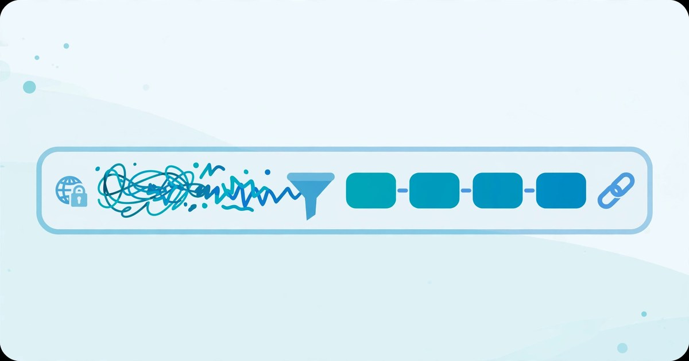

How to Generate a Slug Online
Turn any page title into a clean, lowercase, hyphenated URL slug in seconds — free and private.
November 20, 2026 · 5 min read

You can generate a clean URL slug online in seconds: open ToolsHub's Slug Generator, type your page title, and the slug updates live — lowercase, accents removed, words joined with hyphens, symbols stripped. Copy it and use it in your URL. No signup, no download: everything runs in your browser.
A slug is the readable part of a web address that comes after the domain name. In yoursite.com/how-to-generate-a-slug-online, the slug is how-to-generate-a-slug-online. A good one tells a reader — and a search engine — what the page is about before it loads. A bad one is a string of numbers, a block of uppercase, or a title pasted in with its spaces still in it.
What the tool does
The Slug Generator follows four rules: lowercase, accents removed, words joined with hyphens, symbols stripped. It applies them live as you type:
- Lowercase — every letter is lowered, so "How to Create a Favicon Online" becomes "how-to-create-a-favicon-online". Web addresses are case-sensitive, so this avoids two versions of the same page.
- Accents removed — letters with accents are reduced to their plain form, so "Café" becomes "cafe".
- Words joined with hyphens — every run of non-letters and non-numbers becomes a single hyphen, so spaces, colons, dashes and exclamation marks all collapse into one "-". Leading and trailing hyphens are trimmed.
- Symbols stripped — "&", "!", "?", "(", ")" and similar punctuation disappear instead of breaking the URL.
There is one special case. If the whole title is in a non-Latin script — Urdu, Arabic, Hindi, Chinese — the plain-letter rules would leave nothing behind, so the tool keeps the words, joins them with hyphens, and percent-encodes them instead.
Generate a slug in 5 steps
- Open the Slug Generator tool. The cursor is already in the title box — nothing to install, nothing to sign up for.
- Type or paste your page title or headline. The slug updates live with every keystroke, so you can edit the title until the slug reads well.
- Read the slug and trim the title if needed. If the slug is long, shorten the title or drop filler words such as "the" and "and" — a short slug is easier to read, share and remember.
- Press Copy slug. On success the tool shows "Copied to clipboard." If the box is still empty it warns "Nothing to copy yet — type a title first."
- Paste the slug into your URL. Use it as the last part of the address, for example yoursite.com/how-to-generate-a-slug-online, and keep it the same once the page is published.
Worked example 1: a blog title becomes a slug
Take the title "How to Create a Favicon Online". Lowercase it, replace each gap between words with one hyphen, and you get "how-to-create-a-favicon-online" — 30 characters in total.
The tool's own example works the same way. "10 Easy Breakfast Ideas for Busy Mornings" becomes "10-easy-breakfast-ideas-for-busy-mornings" — 41 characters. The number stays at the front, exactly as in the title.
Worked example 2: accents, symbols and extra spaces
Messy titles are where the tool earns its keep. "Café & Bistro — New Menu 2026!" goes through three changes: the accent on "Café" is stripped to "cafe", the "&", the em dash and the "!" each become a hyphen, and the hyphens collapse into single ones. The result is "cafe-bistro-new-menu-2026" — 25 characters.
Extra spaces are handled the same way. Typing " Hello World " gives "hello-world", 11 characters — the leading and trailing hyphens are trimmed and the three middle spaces collapse to one. A title with a year and punctuation, "2026: Top 10 Tools!", becomes "2026-top-10-tools", 17 characters.
Worked example 3: a non-English title
Now type an Urdu title, "سونے کی قیمت" (the price of gold). The plain-letter rules would leave nothing, so the tool takes the other path: it trims the title, joins the words with hyphens, and percent-encodes the result. The slug it produces is "%D8%B3%D9%88%D9%86%DB%92-%DA%A9%DB%8C-%D9%82%DB%8C%D9%85%D8%AA" — 62 characters. The maths: 10 letters × 2 bytes each × 3 characters per byte, plus 2 hyphens, is 62 in total.
It looks long, but it is a valid, working link, and the browser shows the readable Urdu words in the address bar when the page loads. An empty box, by contrast, shows just "—" as a placeholder — there is no slug to copy until you type something.
Good slugs vs bad slugs
| Page title | Good slug | Bad slug |
|---|---|---|
| How to Generate a Slug Online | how-to-generate-a-slug-online | How to Generate a Slug Online!!! |
| Best Wireless Earbuds in Pakistan (November 2026) | best-wireless-earbuds-in-pakistan-november-2026 | article-12345 |
| GTA 6 Is Out Today: Release Time, Download Size, Editions | gta-6-release-time-download-size | gta-6-is-out-today-release-time-download-size-editions |
The bad slugs fail in different ways. The first keeps its capitals, spaces and exclamation marks — spaces break in links and capitals can create a duplicate page. The second says nothing at all: a reader cannot tell what "article-12345" is. The third is accurate but 54 characters long; trimming the filler leaves "gta-6-release-time-download-size" at 32 characters with nothing lost. As a rule of thumb, keep a slug under about 50–60 characters.
5 mistakes to avoid when making slugs
- Leaving spaces or capital letters in the URL. A space in a link becomes "%20" and an uppercase letter can split one page into two addresses. Always use lowercase and hyphens.
- Using underscores instead of hyphens. "how_to_generate_a_slug" looks similar, but hyphens are read as word separators while underscores are not.
- Stuffing the slug with keywords. Repeating the same word or cramming in every search term makes a long, spammy address that nobody trusts or shares.
- Changing a published slug without thinking. Once a page is live, other sites may link to its URL. If you must change the slug, set up a redirect from the old address to the new one, or those links break.
- Letting an automatic slug stay meaningless. Many sites auto-generate a slug from the title — if the title was "Untitled" or "Final v2", the slug is useless. Generate the slug from the finished title, and check it reads well before publishing.
Frequently asked questions
What is a URL slug?
The readable part of a web address after the domain name — for example, in yoursite.com/how-to-generate-a-slug-online the slug is "how-to-generate-a-slug-online". It usually mirrors the page title, in lowercase with words joined by hyphens.
Why are slugs lowercase with hyphens?
Web addresses are case-sensitive, so "How-To" and "how-to" can be treated as two different pages. Hyphens are read as word separators, so search engines and people read the slug as separate words.
What happens to accents and non-English words in a slug?
ToolsHub's Slug Generator removes accents, so "Café" becomes "cafe". If the whole title is in a non-Latin script such as Urdu, Arabic or Hindi, the tool percent-encodes it instead, so the link still works — "سونے کی قیمت" becomes a 62-character encoded slug.
Can I use the same slug twice on my site?
No — two pages cannot share the same URL. The Slug Generator creates the slug text; it does not check whether your site already uses it. If it is taken, add a word or a year, for example "best-wireless-earbuds-in-pakistan-november-2026".
Related tools: URL Encoder/Decoder · Case Converter · Word Counter